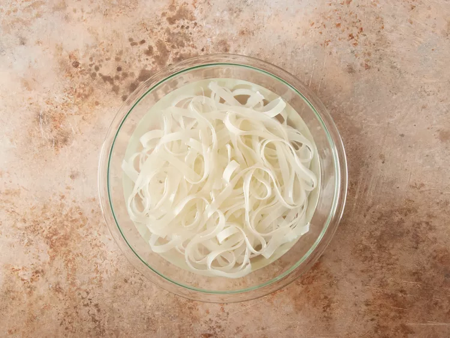
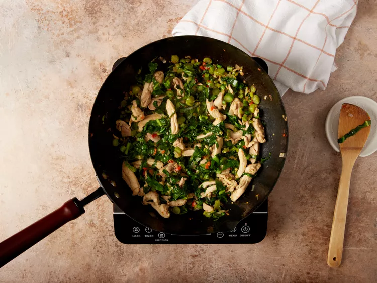
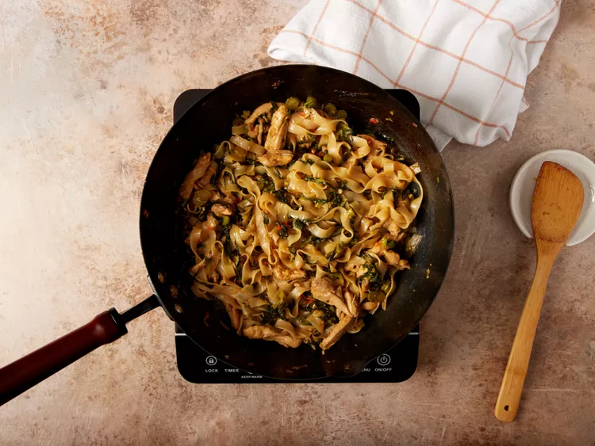
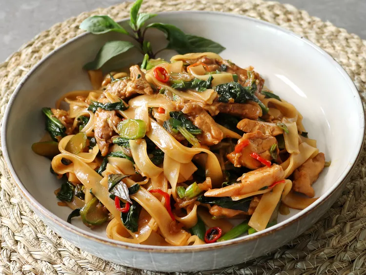

Chef John's Drunken Noodles
A flavorful Thai-inspired noodle dish packed with veggies and spice.
Ingredients
- 3 tablespoons oyster sauce
- 3 tablespoons soy sauce
- 1 tablespoon fish sauce
- 1 tablespoon maple syrup
- 1 teaspoon white sugar
- 1 teaspoon sesame oil
- 2 tablespoons cold water
- 1 tablespoon cornstarch
- 1 (12 ounce) package dried rice noodles
- 1/4 cup peanut oil
- 4 large eggs, beaten
- 1 cup shallots, thinly sliced
- 4 cloves garlic, minced
- 2 cups sliced bell peppers
- 1 pound Chinese broccoli, sliced (Optional)
- 2 cups bean sprouts
- 1 cup fresh Thai basil leaves
- 1 teaspoon soy sauce, or to taste
Directions
-
Mix oyster sauce, soy sauce, fish sauce, maple syrup, sugar, sesame oil, water, and cornstarch in a bowl.
-
Soak rice noodles in hot water until tender, drain and set aside.
 Rice noodles soaking until tender -
Heat oil in a wok over medium-high heat. Cook eggs until scrambled, then set aside.
-
Sauté shallots and garlic until fragrant. Add peppers and Chinese broccoli, stir-fry for 2–3 minutes.
 Noodles stir-fried with sauce and vegetables -
Add drained noodles and sauce mixture. Stir-fry until noodles are coated and glossy.
 Noodles stir-fried with sauce and vegetables -
Mix in bean sprouts, scrambled eggs, and Thai basil. Cook 1–2 more minutes. Serve hot!
 Noodles Served Hot
Nutrition Facts
| Calories | Fat | Carbs | Protein |
|---|---|---|---|
| 341 | 9g | 61g | 5g |